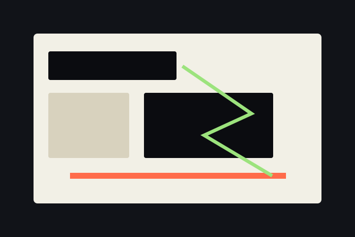

c2a-001 / history
HUDOIT 论坛记忆
一个关于实验编程早期土壤的历史节点，用来连接交互媒体论坛、社群形成和后来的 code2art 实践。

展品说明
HUDOIT 是 2010 年代中国活跃的交互媒体论坛之一，也是实验编程社群精神来源之一。这个展品用于收集论坛历史、相关课程、成员记忆和早期作品线索。
过程与方法
当前版本先把历史节点作为馆藏入口建立起来。后续可以补充截图、帖子索引、采访、课程记录和相关开源项目链接。
 code2art museum
code2art museum
c2a-001 / history
一个关于实验编程早期土壤的历史节点，用来连接交互媒体论坛、社群形成和后来的 code2art 实践。

HUDOIT 是 2010 年代中国活跃的交互媒体论坛之一，也是实验编程社群精神来源之一。这个展品用于收集论坛历史、相关课程、成员记忆和早期作品线索。
当前版本先把历史节点作为馆藏入口建立起来。后续可以补充截图、帖子索引、采访、课程记录和相关开源项目链接。